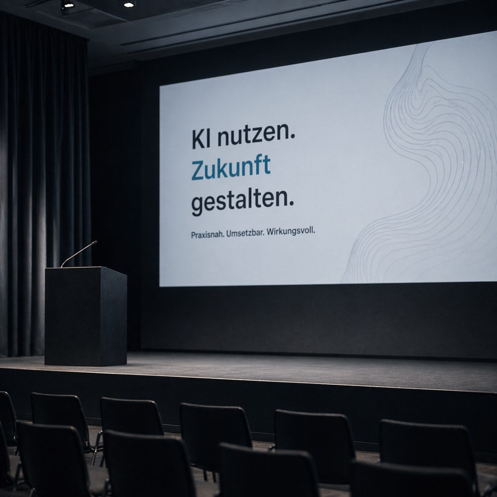
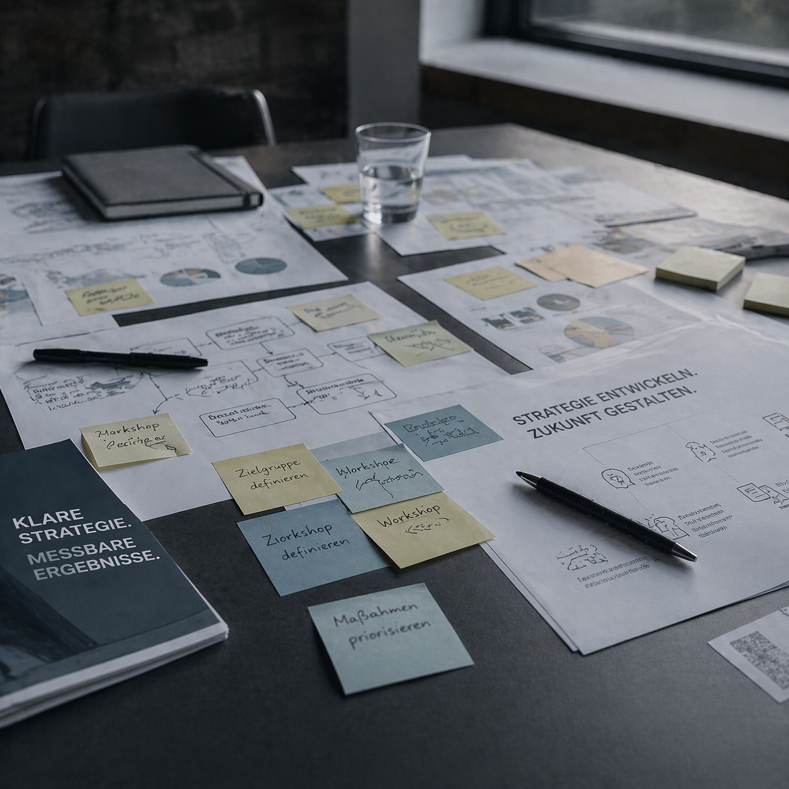
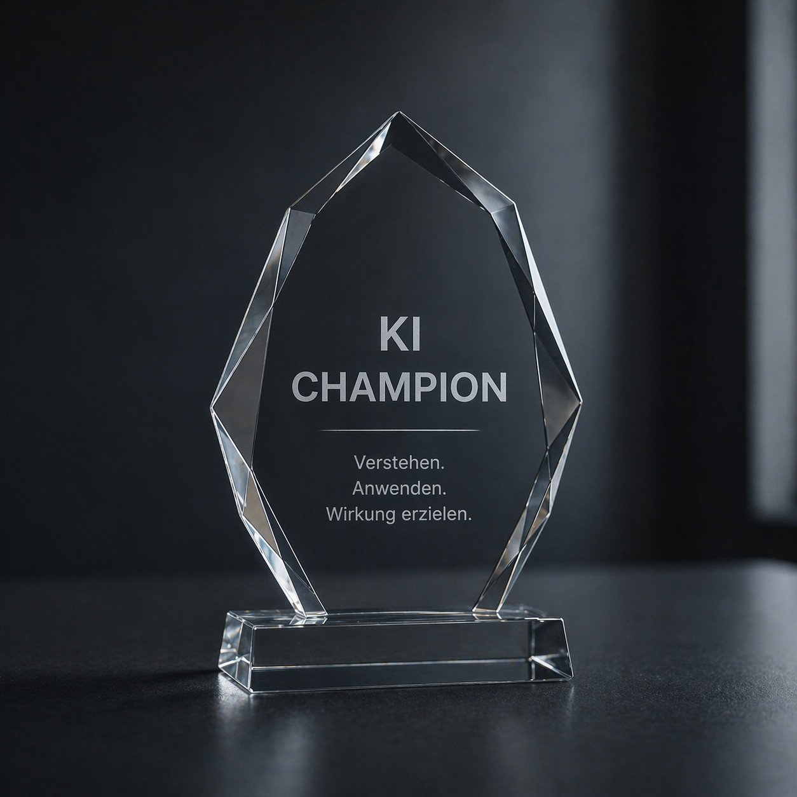
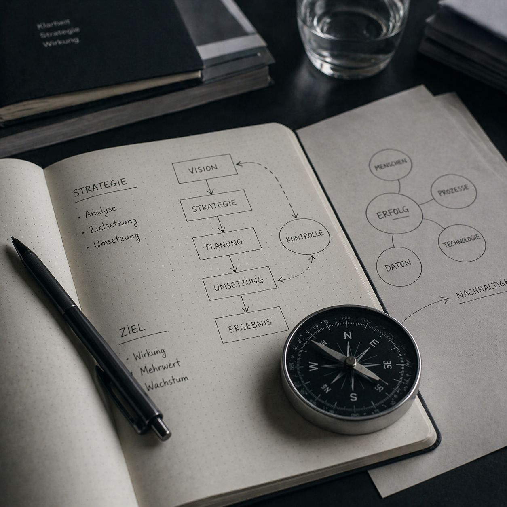

Keynotes
Ein guter Vortrag verändert, wie Menschen über ein Thema denken. Ich spreche über KI-Transformation so, dass es ankommt – beim Management, beim gemischten Kongresspublikum, beim Team.
Mehr zu Keynotes →Ich befähige Organisationen, technologischen Wandel von innen heraus zu gestalten – mit dem Wissen, der Leadership und einer Community von Change Makern.
Die meisten KI-Initiativen scheitern nicht an der Technologie. Sie scheitern daran, dass Organisationen Tools kaufen, bevor sie eine Haltung haben.
Ich beginne deshalb nicht mit Produkten oder Plattformen. Ich beginne mit den Menschen, die damit arbeiten sollen. Mit Führungskräften, die Orientierung brauchen. Mit Teams, die Ängste und Chancen gleichzeitig spüren. Mit Unternehmen, die KI nicht nur einführen – sondern tragen wollen.
Das ist der Kern meiner Arbeit: Kultureller Wandel und Technologieverständnis zusammendenken. Damit KI in Ihrer Organisation nicht ein weiteres Projekt wird, das verpufft.
Von der ersten Orientierung bis zur strategischen Begleitung – die Formate passen sich an, nicht umgekehrt.

Ein guter Vortrag verändert, wie Menschen über ein Thema denken. Ich spreche über KI-Transformation so, dass es ankommt – beim Management, beim gemischten Kongresspublikum, beim Team.
Mehr zu Keynotes →
Hands-on. Für Teams, die KI nicht nur kennen, sondern anwenden wollen – mit einem echten Verständnis, was dahintersteckt.
Zu den Formaten →
Das Ausbildungsprogramm für interne KI-Multiplikator:innen. Ihre Mitarbeitenden werden zu den Personen, die KI im Unternehmen tragen – nicht nur nutzen.
Programm entdecken →
Wenn Ihre Organisation mehr braucht als einen Workshop. Ich begleite bei der Frage: Wie gehen wir mit KI wirklich um – strategisch, kulturell, verantwortungsvoll?
Zur Beratung →Technologie ist nicht neutral. Sie verändert, wie Teams zusammenarbeiten, wie Führung funktioniert, wie Entscheidungen getroffen werden. Ich begleite diesen Wandel – nicht nur die Tool-Einführung.
Ich sage Ihnen nicht, dass KI alles verändern wird. Ich sage Ihnen, was KI in Ihrer spezifischen Situation leisten kann – und was nicht.
Jede Maßnahme ist darauf ausgelegt, dass die Personen, die KI einsetzen sollen, das auch wirklich tun wollen. Nicht weil sie müssen. Weil sie verstehen, warum es sinnvoll ist.
„In einer Welt, die sich so schnell verändert, müssen Organisationen verstehen: Technologie ist kein IT-Thema. Sie verändert ganze Unternehmen."